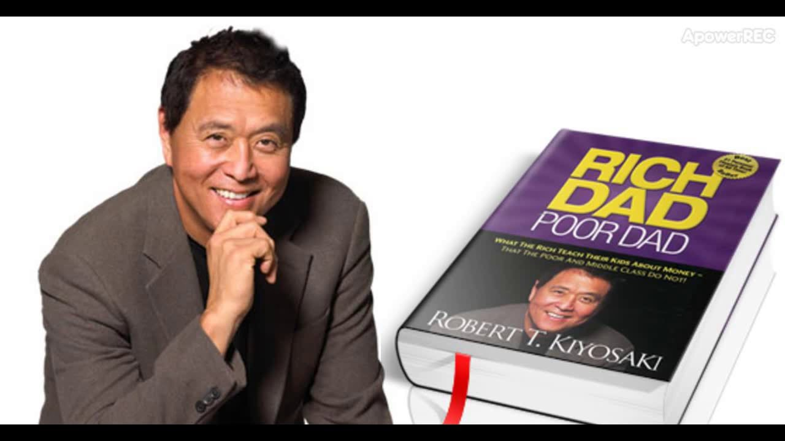
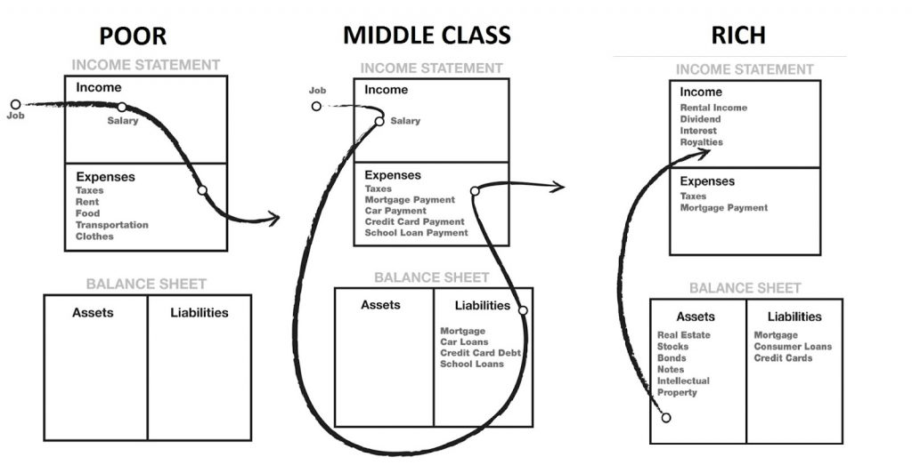
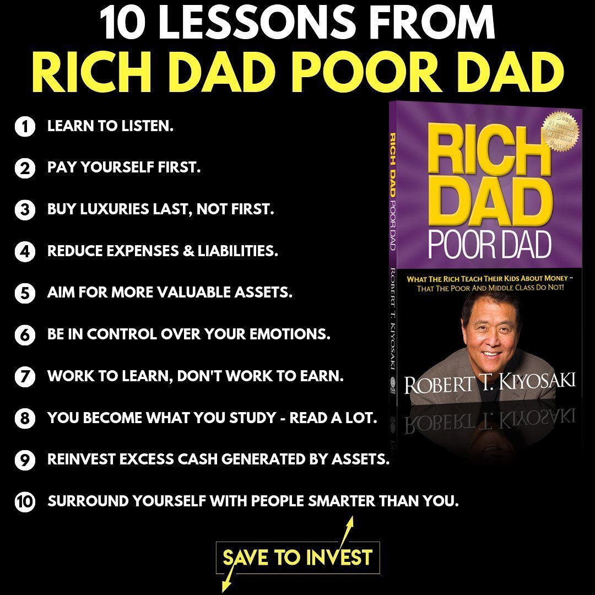

SUMMARY OF THE BOOK:-
In “Rich Dad Poor Dad”, Robert Kiyosaki shares what he learned about wealth from his “rich dad” and “poor dad”, the secrets that separate the Rich from the Poor and Middle Class, and how we can apply this to grow our wealth.
This book is not just about money. It’s about how we are taught to think; how we are programmed by schools, family, and friends to look at the rich as greedy no good bloodsuckers and opportunities as risks. It is an attempt to reprogram minds to look at why we do what we do.. why do we buy all these shoes, clothes, cars, jewelery.. have we earned it or are we just trying to maintain an image?
Kiyosaki was fortunate to grow up with 2 fathers – his real father and his best friend’s father – one poor and other rich. By comparing and reflecting upon the different advice given by each dad, Kiyosaki was able to learn from both of them.
• “Poor Dad”. His father was a school teacher with good degrees and a P.h.D. Yet, despite earning a good salary, he struggled with debt and finances his whole life.
• “Rich Dad”. His best friend Mike’s father was a business owner who never finished eighth grade, but eventually became one of the richest men in Hawaii.
Price:Rs.199
Ratings:
Publisher : Plata publishing
Published(year):1997
REVIEWS:-
Written by Lams john
To me the most important thing it teaches is that being educated is the key.. educated in our motives, in money, in the world around us.. educated does not always mean a degree lesson can be learned anywhere at anytime..
The book is great for people like me who think in pictures and in theory. He explains his financial theories clearly and adds diagrams to explain how money flows into and out of our wallets. I have read other financial self-help books and they were too detailed, too “do this…do that…” For me that didn’t help or motivate me because, I don’t do anything unless I want to do it. Other books never really gave me the why. They told me what I needed to correct.. but if I don’t see anything wrong in what I am doing.. why should I take steps to correct it? This book broke down to me the whys. And now I am ready for action.
This is a GREAT book! I can definitely say it changed my life and they way I look at money and finances. For example, my husband and I bought investment properties after I had him read it as well. It is very easy and interesting to read. READ IT! READ IT! READ IT!
Here is one of my favorite lines from it, approximately quoted: “I have never met a rich man who hasn’t lost a lot of money, but I have met a lot of poor men who have never lost a dime.” True! SO TRUE. Everytime I lose money in an investment, I remember how much better I am for investing and making my money work for me than just hiding it and hoping nothing bad happens to it.
Also, I loved the story of the young talented writer who came to Robert Kiyosaki and lamented not being able to get published. He told her she was very talented, and that she should take a sales class. She was mortified. SALES? She was a gifted writer, not a lowly salesperson. (I excelled at sales, so I personally already was thinking she was kind of dumb.) Robert Kiyosaki pointed out that the cover if his book said “Best SELLING author”, not “Best WRITING author”. She was miffed. He was right.
I saw some other reviews saying they disliked the way he talks about people with tons of education always being poor, as if he is above them and so much smarter. Honestly, there is nothing wrong with having lots of education and still being poor, if that’s all you want. This book is about how to be smart financially, though. Feel free to be poor. I want to be a millionaire soon. So I learn about money. And I love and learn from Robert Kiyosaki, who is great at that.
Lots of people look at him and get annoyed that he is so rich and successful, and don’t like him. I instead look at how he is rich and successful, and try to figure out how he did it. Amen.
– Written by Abby
This book goes on my shelf of four books I read over and over, books I read devotionally. It totally revolutionized my outlook not only on making money, but also on education. I wish everyone would read this. I wish the close-minded, those who graduated from whatever school they attended and haven’t allowed themselves a new thought since, could break through the stone walls they have erected around their souls and let this in. This message can save our world! I am not exaggerating.
(May 24, 2016) I just finished re-re-re-reading Rich Dad, Poor Dad. From the first chapter it was like watching a fireworks show. The insights! Admittedly, I love seeing things in a new way, and I love having a different take on things. What Kiyosaki has to say on education should be broadcast, read, and studied, and all education systems in the world should take him into account. If a lot more people would read and take to heart his financial advice, I think the world’s economy would be much better. Now I have to go out and live this. And I’m starting the book over tomorrow.
– Written by Will Thomas
RICH DAD POOR DAD DIAGRAM
The author Robert Kiyosaki uses simple diagrams to explain very complex money concepts. The most important of them all is to understand the difference between assets and liabilities.
This is how he explains it using this diagram. This one is arguably the most powerful diagram in personal finance.

The picture on the left and middle is how the poor and the middle class handle money. They accumulate liabilities that continue to take money out of their pocket.
The picture on the right is how the rich handle money. They accumulate assets that put even more money in their pocket. According to the author, anyone can choose to be rich or poor. It is not luck or inheritance. It is a matter or choice and financial literacy.

ABOUT THE AUTHOR:-
Best known as the author of Rich Dad Poor Dad?the #1 personal finance book of all time?Robert Kiyosaki has challenged and changed the way tens of millions of people around the world think about money. He is an entrepreneur, educator, and investor who believes that each of us has the power to makes changes in our lives, take control of our financial future, and live the rich life we deserve. With perspectives on money and investing that often contradict conventional wisdom, Robert has earned an international reputation for straight talk, irreverence, and courage and has become a passionate and outspoken advocate for financial education. Robert's most recent books?Why the Rich Are Getting Richer and More Important Than Money?were published in the spring of last year to mark the 20th Anniversary of the 1997 release of Rich Dad Poor Dad. That book and its messages, viewed around the world as a classic in the personal finance arena, have stood the test of time. Why the Rich Are Getting Richer, released two decades after the international blockbuster bestseller Rich Dad Poor Dad, is positioned as Rich Dad Graduate School. Robert has also co-authored two books with Donald Trump, prior to his successful bid for the White House and election as President of the United States.